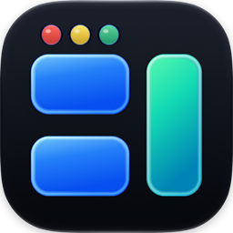

Drag snapping
Drag a title bar toward an edge or corner. See the placement, then release to snap. Adjust the Snap Zones in Settings.
A free window manager for macOS. Drag the edge between two windows and both resize together.
Apple silicon Mac · macOS 26 or later Free and open source · Public beta
Drag the edge two windows share. One gets more room, its neighbour gives it up, and both sides stay aligned.
Every change applies as you move.
The new frames show during the drag and apply when you release.
Open a new window and the layout makes room. It chooses the split that keeps movement and resizing to a minimum.
When an app stops responding and comes back, its windows rejoin the layout.
Drag it to an edge, press a shortcut, or pick it from a wheel. Then bring back a whole desktop in one step.
Drag a title bar toward an edge or corner. See the placement, then release to snap. Adjust the Snap Zones in Settings.
Place windows with global shortcuts, and undo a placement to try another.
Hold ⌃ ⌥ ⇧, choose a sector, and release. Escape or the center cancels. Build a Custom wheel with one or two levels.
Choose a group at the pointer, then flick to a command.
Save a desktop’s arrangement and apply it later from the menu bar, the Layout Wheel or its own shortcut. Bind a layout to a set of displays, and BetterTile applies it when they connect.
Apply never opens an app or takes a window from another desktop. Undo Apply puts the windows back.
Group windows in resizable panes. Select a tab to bring its window forward. Drag tabs between panes, or drop a floating window into a pane as a tab.
Choose a Tabbed layout from a picture of its panes. Every pane keeps its tabs.
Rebuild a desktop’s layout from its visible windows. Adaptive panes return to equal shares.
Next Display and Previous Display make room on the destination and close the gap on the source.
BetterTile is open source under GPL v3 or later. There is no paid tier, subscription, advertising, behavioral tracking or sale of user data.
The beta is self-signed, without Apple notarization, so macOS asks you to confirm the first launch. It takes one extra step.
Get the disk image from the latest GitHub release.
Open the disk image and drag BetterTile into your Applications folder.
Try to open BetterTile once. Then go to System Settings → Privacy & Security and choose Open Anyway.
Follow the app’s explanation to grant Accessibility. Then choose your layout and the controls you want.
BetterTile needs an Apple silicon Mac with macOS 26 or later.
Accessibility lets BetterTile read window frames, then move and resize eligible windows. The app explains the permission before it asks for it.
Yes. BetterTile is free forever and open source under GPL v3 or later. There is no paid tier, trial expiry, subscription, advertising, behavioral tracking or sale of user data.
Window and configuration data stay on your Mac. Update checks and downloads contact GitHub, which receives ordinary connection metadata. Automatic checks run every four hours by default and can be turned off. Send Feedback opens a GitHub form; it submits nothing by itself.
BetterTile shows the release notes and asks before it downloads or installs anything. Sparkle verifies an EdDSA signature on each update. This is separate from the beta’s self-signed macOS code signature.
Turn off Stage Manager before you use Tabbed. Pane assignments, followed Saved Layouts and Undo history last only for the current app session. Tabs cannot yet be dragged between displays. BetterTile does not move windows between macOS desktops. Some apps refuse requested window sizes.
Yes. BetterTile works with windows that macOS tiling arranged. For dragging to screen edges, use either BetterTile Drag Snapping or macOS edge tiling, so the two previews do not compete.

Apple silicon Mac · macOS 26 or later Free and open source · Public beta
Self-signed beta. The first launch needs Open Anyway.